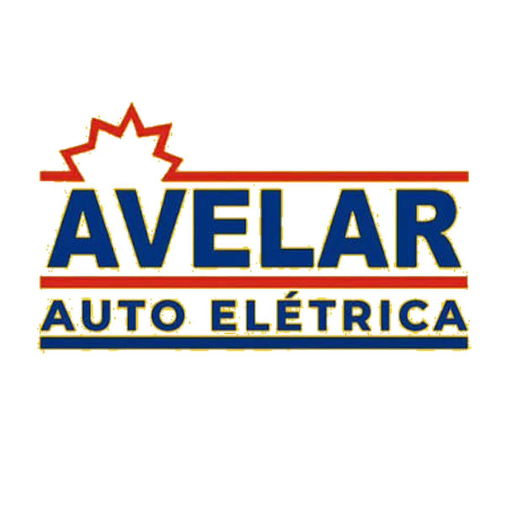

Ar-condicionado automotivo
Diagnóstico de falhas, climatização, carga, higienização e reparo do sistema.
Conhecer o serviçoAtendimento especializado em auto elétrica, injeção eletrônica, ar-condicionado automotivo, reparo de módulos, remap e diagnóstico de veículos leves, pesados e agrícolas.

Cada serviço começa pela investigação correta da falha. O objetivo é evitar trocas desnecessárias e encontrar a origem do problema.
Diagnóstico de falhas, climatização, carga, higienização e reparo do sistema.
Conhecer o serviçoLeitura técnica, testes elétricos e investigação da causa real das falhas.
Conhecer o serviçoAvaliação e reparo especializado em centrais e módulos eletrônicos automotivos.
Conhecer o serviçoCalibração responsável conforme o veículo, a aplicação e a condição mecânica.
Conhecer o serviçoDiagnóstico eletrônico para caminhões, utilitários, máquinas e aplicações agrícolas.
Conhecer o serviçoSoluções em partida, carga, chicotes, sensores, atuadores e eletrônica embarcada.
Conhecer o serviçoUma identidade construída em Passos, unindo o conhecimento tradicional da oficina à evolução constante da eletrônica automotiva.
Veículos modernos exigem mais do que substituir peças. É preciso compreender sistemas, interpretar sinais e testar cada hipótese.
Envie pelo WhatsApp o modelo, o ano do veículo e uma breve descrição do defeito. Fotos do painel ou do componente também podem ajudar na triagem inicial.
Fale diretamente com a equipe da Avelar e descreva os sintomas do veículo.